Prediction tasks on financial time series are notoriously difficult, primarily driven by the high degree of noise and the generally accepted, semi-strong form of market efficiency (Fama, 1970). Yet, there is a plethora of well-known capital market anomalies that are in stark contrast with the notion of market efficiency. For example, Jacobs (2015) or Green et al. (2013) provide surveys comprising more than 100 of such capital market anomalies, which effectively rely on return predictive signals to outperform the market. However, the financial models used to establish a relationship between these return predictive signals, (the features) and future returns (the targets), are usually transparent in nature and not able to capture complex non-linear dependencies.
In the last years, initial evidence has been established that machine learning techniques are capa- ble of identifying (non-linear) structures in financial market data, see Huck (2009, 2010); Takeuchi and Lee (2013); Moritz and Zimmermann (2014); Dixon et al. (2015), and further references in At- salakis and Valavanis (2009) as well as Sermpinis et al. (2013). Specifically, we expand on the recent work of Krauss et al. (2017) on the same data sample for the sake of comparability. The authors use deep learning, random forests, gradient-boosted trees, and different ensembles as forecasting meth- ods on all S&P 500 constituents from 1992 to 2015. One key finding is that deep neural networks with returns of 0.33 percent per day prior to transaction costs underperform gradient-boosted trees with 0.37 percent and random forests with 0.43 percent. The latter fact is surprising, given that deep learning has “dramatically improved the state-of-the-art in speech recognition, visual object recognition, object detection and many other domains” (LeCun et al., 2015, p. 436). At first sight, we would expect similar improvements in the domain of time series predictions. However, Krauss et al. (2017, p. 695) point out that “neural networks are notoriously difficult to train” and that it “may well be that there are configurations in parameter space to further improve the performance” of deep learning.
In this paper, we primarily focus on deep learning, and on further exploring its potential in a large-scale time series prediction problem. In this respect, we make three contributions to the literature.
First, we focus on long short-term memory (LSTM) networks, one of the most advanced deep learning architectures for sequence learning tasks, such as handwriting recognition, speech recognition, or time series prediction (Hochreiter and Schmidhuber, 1997; Graves et al., 2009, 2013; Schmidhuber, 2015). Surprisingly, to our knowledge, there has been no previous attempt
to deploy LSTM networks on a large, liquid, and survivor bias free stock universe to assess its performance in large-scale financial market prediction tasks. Selected applications, as in Xiong et al. (2015), focus on predicting the volatility of the S&P 500, on selected foreign exchange rates (Giles et al., 2001), or on the impact of incorporating news for selected companies (Siah and Myers, n.d.). We fill this void and apply LSTM networks to all S&P 500 constituents from 1992 until 2015. Hereby, we provide an in-depth guide on data preprocessing, as well as development, training, and deployment of LSTM networks for financial time series prediction tasks. Last but not least, we contrast our findings to selected benchmarks from the literature
- a random forest (the best performing benchmark), a standard deep neural net (to show the value-add of the LSTM architecture), and a standard logistic regression (to establish a baseline). The LSTM network outperforms the memory-free methods with statistically and economically significant returns of 0.46 percent per day - compared to 0.43 percent for the RAF, 0.32 percent for the standard DNN, and 0.26 percent for the logistic regression. This relative advantage also holds true with regard to predictional accuracy where a Diebold- Mariano test confirms superior forecasts of the LSTM networks compared to the applied benchmarks.
Second, we aim at shedding light into the black box of artificial neural networks - thereby unveiling sources of profitability. Generally, we find that stocks selected for trading exhibit high volatility, below-mean momentum, extremal directional movements in the last days prior to trading, and a tendency for reversing these extremal movements in the near-term future.
Third, we synthesize the findings of the latter part into a simplified, rules-based trading strategy that aims at capturing the quintessence of the patterns the LSTM acts upon for selecting winning and losing stocks. A strategy that buys short-term extremal losers and sells short-term extremal winners leads to daily returns of 0.23 percent prior to transaction costs. Regression analysis reveals that this simplified strategy is able to explain 52.1 percent of the variance of the LSTM long returns and 53.6 percent of the variance of the LSTM short returns. The remaining alpha of the LSTM-based strategy of about 31 bps per day prior to transaction costs is presumably due to more complex patterns and relationships extracted from the return sequences.
The remainder of this paper is organized as follows. Section 2 briefly covers the data sample, software packages, and hardware. Section 3 provides an in-depth discussion of our methodology,
i.e., the generation of training and trading sets, the construction of input sequences, the model architecture and training as well as the forecasting and trading steps. Section 4 presents the results and discusses our most relevant findings in light of the existing literature. Finally, section 5 concludes.
For the empirical application, we use the S&P 500 index constituents from Thomson Reuters. For eliminating survivor bias, we first obtain all month end constituent lists for the S&P 500 from Thomson Reuters from December 1989 to September 2015. We consolidate these lists into one binary matrix, indicating whether the stock is an index constituent in the subsequent month. As such, we are able to approximately reproduce the S&P 500 at any given point in time between December 1989 and September 2015. In a second step, for all stocks having ever been a constituent of the index during that time frame, we download daily total return indices from January 1990 until October 2015. Return indices are cum-dividend prices and account for all relevant corporate actions and stock splits, making them the most adequate metric for return computations. Following Clegg and Krauss (2016), we report average summary statistics in table 1, split by industry sector. They are based on equal-weighted portfolios per sector, generated monthly, and constrained to index constituency of the S&P 500.
Data preparation and handling is entirely conducted in Python 3.5 (Python Software Founda- tion, 2016), relying on the packages numpy (Van Der Walt et al., 2011) and pandas (McKinney, 2010). Our deep learning LSTM networks are developed with keras (Chollet, 2016) on top of Google TensorFlow, a powerful library for large-scale machine learning on heterogenous systems (Abadi et al., 2015). Moreover, we make use of sci-kit learn (Pedregosa et al., 2011) for the random forest and logistic regression models and of H2O (H2O, 2016) for the standard deep net. For performance evaluation, we revert to R, a programming language for statistical computing (R Core Team, 2016) and the package PerformanceAnalytics by Peterson and Carl (2014). The LSTM network is trained on NVIDIA GPUs, all other models are trained on a CPU cluster.
Industry | No. of stocks | Mean return | Standard deviation | Skewness | Kurtosis |
Industrials | 80.6 | 0.99 | 5.36 | -0.19 | 1.71 |
Consumer Services | 72.6 | 1.07 | 5.27 | -0.20 | 2.59 |
Basic Materials | 35.2 | 0.90 | 6.31 | -0.02 | 2.24 |
Telecommunications | 10.7 | 0.92 | 6.50 | 0.34 | 4.76 |
Health Care | 41.3 | 1.33 | 4.40 | -0.40 | 1.18 |
Technology | 50.3 | 1.41 | 8.50 | -0.06 | 1.11 |
Financials | 78.0 | 1.13 | 6.17 | -0.39 | 2.44 |
Consumer Goods | 65.2 | 1.04 | 4.53 | -0.44 | 3.02 |
Oil & Gas | 31.2 | 1.00 | 6.89 | -0.03 | 1.06 |
Utilities | 34.6 | 0.85 | 4.54 | -0.43 | 1.72 |
All | 499.7 | 1.04 | 4.78 | -0.49 | 2.01 |
Our methodology consists of five steps. First, we split our raw data in study periods, composed of training sets (for in-sample training) and trading sets (for out-of-sample predictions). Second, we discuss the feature space and targets necessary for training and making predictions. Third, we provide an in-depth discussion of LSTM networks. Fourth, we briefly describe random forests, the deep net, and the logistic regression model we apply. Fifth, we develop the trading approach. The rest of this section follows the five step logic outlined above.
Generation of training and trading sets
Following Krauss et al. (2017), we define a “study period” as a training-trading set, consisting of a training period of 750 days (approximately three years) and a trading period of 250 days (approximately one year). We split our entire data set from 1990 until 2015 in 23 of these study periods with non-overlapping trading periods. Let ni denote the number of stocks that are a S&P 500 constituent at the very last day of the training period in study period i, so ni is very close to 5002.
For the training set, we consider all ni stocks with the history they have available. Some stocks
2The S&P 500 constituency count slightly fluctuates around 500 over time.
exhibit a full 750 day training history, some only a subset of this time frame, for example, when they are listed at a later stage. The trading set is also composed of all ni stocks. If a constituent exhibits no price data after a certain day within the trading period, it is considered for trading up until that day.3
Feature and target generation
Features - Return sequences for LSTM networks
t
Let Ps = (Ps)
t∈T
be defined as the price process of stock s at time t, with s ∈ {1, . . . , ni} and
Rm,s
t the simple return for a stock s over m periods, i.e.,
P
Rm,s t
P
t = s t−m
− 1. (1)
t
For the LSTM networks, we first calculate one-day (m = 1) returns R1,s for each day t and each stock s, and stack them in one large feature vector V of dimension ni × Tstudy , where Tstudy denotes the number of days in the study period. Then, we standardize the returns by subtracting the mean
(µ
m train
train
) and dividing them by the standard deviation (σm
) obtained from the training set:4
m,s m
t =
R˜m,s
σ
m
Rt − µtrain . (2)
train
t
LSTM networks require sequences of input features for training, i.e., the values of the features at consecutive points in time. Our single feature is the standardized one-day return R˜1,s. We opt for a sequence length of 240, thus comprising the information of approximately one trading year. Hence,
t
we generate overlapping sequences of 240 consecutive, standardized one-day returns R˜1,s
in the
following way: First, we sort the feature vector V by stock s and date t in ascending order. Then,
t−239
we construct sequences of the form {R˜1,s
, R
˜1,s
t−238
t
, . . . , R˜1,s} for each stock s and each t ≥ 240
of the study period. For the first stock s1 the sequence hence consists of the standardized one-
day returns {R˜1,s1, R˜1,s1, ..., R˜1,s1}. The second sequence consists of {R˜1,s1, R˜1,s1, ..., R˜1,s1} and so
1 2 240
2 3 241
forth. An illustration is provided in figure 1. In total, each study period consists of approximately

3The reason for exhibiting no more price data is generally due to delisting. Delisting may be caused by various
4It is key to obtain mean and standard deviation from the training set only, in order to avoid look-ahead biases.


Feature vector
Stock s1 Stock s2
Date
1
2
3
4
…
237
238
239
240
241
242
243
…
R~1,s
t
0.057
-0.451
-1.336
0.095
…
0.687
-0.300
-0.415
-0.515
-0.438
-0.173
2.455
…
1
2
3
4
…
0.418
-2.335
-2.161
1.246
…
1
2
3
4
…
237
238
239
240
0.057
-0.451
-1.336
0.095
…
0.687
-0.300
-0.415
-0.515
Stock s1
Sequence 1
1
2
3
4
…
0.418
-2.335
-2.161
1.246
…
Stock s2
2
3
4
…
237
238
239
240
241
Stock s1
-0.451 -1.336 0.095 … 0.687 -0.300 -0.415 -0.515 -0.438
Sequence 2
2
3
4
…
Stock s2
-2.335 -2.161 1.246 …
380,000 of those sequences of which approximately 255,000 are used for in-sample training and approximately 125,000 are used for out-of-sample predictions.5
For the sake of comparability, we follow Takeuchi and Lee (2013) and define a binary classifica-
t+1
tion problem, i.e., the response variable Y s
for each stock s and date t can take on two different
t+1
values. To define the two classes, we order all one-period returns R1,s
of all stocks s in period t + 1
in ascending order and cut them into two equally sized classes. Class 0 is realized if the one-period
t+1
return R1,s
of stock s is smaller than the cross-sectional median return of all stocks in period t + 1.
Similarly, class 1 is realized if the one-period return of s is larger than or equal to the cross-sectional median.
The description of LSTM networks follows Graves (2014), Olah (2015), and Chollet (2016). Valuable additional introductions can be found in Karpathy (2015) and Britz (2015), providing step-by-step graphical walkthroughs and code snippets.
LSTM networks belong to the class of recurrent neural networks (RNNs), i.e., neural networks whose “underlying topology of inter-neuronal connections contains at least one cycle” (Medsker, 2000, p. 82). They have been introduced by Hochreiter and Schmidhuber (1997) and were further refined in the following years, e.g., by Gers et al. (2000) and Graves and Schmidhuber (2005), to
5We have 1,000 days in the study period and a sequence length of 240 days. As such, 760 sequences can be created
per stock. Given that there are approximately 500 stocks in the S&P 500, we have a total of approximately 380,000 sequences.
𝑥𝑡 ℎ𝑡−1 𝑥𝑡 ℎ𝑡−1
� 𝑡
candidate
values
2
𝑖𝑡
memory cell
𝑡−1
+
cell state
�𝑡
�𝑡
2 Input gate:
Defines which information to add to the memory (cell state)
1
forget gate
𝑓𝑡
�𝑎�ℎ
𝑥𝑡 ℎ𝑡−1
𝑥𝑡 ℎ𝑡−1
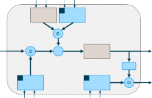
1 Forget gate:
Defines which information to remove from the memory (cell state)
input gate
�
3
output gate
�𝑡
ℎ𝑡
3 Output gate:
Defines which information from the memory (cell state) to use as output
Figure 2: Structure of LSTM memory cell following Graves (2014), and Olah (2015)
name a few. LSTM networks are specifically designed to learn long-term dependencies and are capable of overcoming the previously inherent problems of RNNs, i.e., vanishing and exploding gradients (Sak et al., 2014).
LSTM networks are composed of an input layer, one or more hidden layers, and an output layer. The number of neurons in the input layer is equal to the number of explanatory variables (feature space). The number of neurons in the output layer reflects the output space, i.e., two neurons in our case indicating whether or not a stock outperforms the cross-sectional median in t + 1. The main characteristic of LSTM networks is contained in the hidden layer(s) consisting of so called memory cells. Each of the memory cells has three gates maintaining and adjusting its cell state st: a forget gate (ft), an input gate (it), and an output gate (ot). The structure of a memory cell is illustrated in figure 2.
At every timestep t, each of the three gates is presented with the input xt (one element of the input sequence) as well as the output ht−1 of the memory cells at the previous timestep t − 1. Hereby, the gates act as filters, each fulfilling a different purpose:
The forget gate defines which information is removed from the cell state.
The input gate specifies which information is added to the cell state.
The output gate specifies which information from the cell state is used as output.
The equations below are vectorized and describe the update of the memory cells in the LSTM layer at every timestep t. Hereby, the following notation is used:
xt is the input vector at timestep t.
Wf,x, Wf,h, Ws˜,x, Ws˜,h, Wi,x, Wi,h, Wo,x, and Wo,h are weight matrices.
bf , bs˜, bi, and bo are bias vectors.
ft, it, and ot are vectors for the activation values of the respective gates.
st and s˜t are vectors for the cell states and candidate values.
ht is a vector for the output of the LSTM layer.
During a forward pass, the cell states st and outputs ht of the LSTM layer at timestep t are calculated as follows:
In the first step, the LSTM layer determines which information should be removed from its previous cell states st−1. Therefore, the activation values ft of the forget gates at timestep t are computed based on the current input xt, the outputs ht−1 of the memory cells at the previous timestep (t− 1), and the bias terms bf of the forget gates. The sigmoid function finally scales all activation values into the range between 0 (completely forget) and 1 (completely remember):
ft = sigmoid(Wf,xxt + Wf,hht−1 + bf ). (3)
In the second step, the LSTM layer determines which information should be added to the network’s cell states (st). This procedure comprises two operations: First, candidate values s˜t, that could potentially be added to the cell states, are computed. Second, the activation values it of the input gates are calculated:
s˜t = tanh(Ws˜,xxt + Ws˜,hht−1 + bs˜), (4)
it = sigmoid(Wi,xxt + Wi,hht−1 + bi). (5)
In the third step, the new cell states st are calculated based on the results of the previous two steps with ◦ denoting the Hadamard product:
st = ft ◦ st−1 + it ◦ s˜t. (6)
In the last step, the output ht of the memory cells is derived as denoted in the following two equations:
ot = sigmoid(Wo,xxt + Wo,hht−1 + bo), (7)
ht = ot ◦ tanh(st). (8)
When processing an input sequence, its features are presented timestep by timestep to the LSTM network. Hereby, the input at each timestep t (in our case, one single standardized return) is processed by the network as denoted in the equations above. Once the last element of the sequence has been processed, the final output for the whole sequence is returned.
During training, and similar to traditional feed-forward networks, the weights and bias terms are adjusted in such a way that they minimize the loss of the specified objective function across the training samples. Since we are dealing with a classification problem, we use cross-entropy as objective function.
The number of weights and bias terms being trained is calculated as follows: Let h denote the number of hidden units of the LSTM layer, and i the number of input features, then the number of parameters of the LSTM layer that needs to be trained is:
4hi + 4h + 4h2 = 4(hi + h + h2) = 4(h(i + 1) + h2). (9)
Hereby 4hi refers to the dimensions of the four weight matrices applied to the inputs at each gate, i.e., Wf,x, Ws˜,x, Wi,x, and Wo,x. The 4h refers to the dimensions of the four bias vectors (bf , bs˜, bi, and bo). Finally, the 4h2 corresponds to the dimensions of the weight matrices applied to the outputs at the previous timestep, i.e., Wf,h, Ws˜,h, Wi,h, and Wo,h.
For the training of the LSTM network, we apply three advanced methods via keras. First, we make use of RMSprop, a mini-batch version of rprop (Tieleman and Hinton, 2012), as optimizer. RMSprop is “usually a good choice for recurrent neural networks” (Chollet, 2016). Second, following Gal and Ghahramani (2016), we apply dropout regularization within the recurrent layer. Hereby, a fraction of the input units is randomly dropped at each update during training time, both at the input gates and the recurrent connections, resulting in reduced risk of overfitting and better generalization. Third, we make use of early stopping as a further mechanism to prevent overfitting. Hereby, the training samples are split into two sets: one training and one validation set. The first set is used to train the network and to iteratively adjust its parameters so that the loss function is minimized. After each epoch (one pass across the samples of the first set), the network predicts the unseen samples from the validation set and a validation loss is computed. Once the validation loss does not decrease for patience periods, the training is stopped and the weights of the model with the lowest validation loss is restored (see ModelCheckpoint callback in Chollet (2016)). Following Granger (1993), who suggests to hold back about 20 percent of the sample as “post-sample” data, we use 80 percent of the training samples as training set and 20 percent as validation set, a maximum
training duration of 1,000 epochs, and an early stopping patience of 10. The specified topology of our trained LSTM network is hence as follows:
Input layer with 1 feature and 240 timesteps.
LSTM layer with h = 25 hidden neurons and a dropout value of 0.16. This configuration yields 2,752 parameters for the LSTM, leading to a sensible number of approximately 93 parameters per observation.
Output layer (dense layer) with two neurons and softmax activation function - a standard configuration.
Benchmark models - random forest, deep net, and logistic regression
For benchmarking the LSTM, we choose random forests, i.e., a robust yet high-performing machine learning method, a standard deep net, i.e., for showing the advantage of the LSTM, and a logistic regression, i.e., a standard classifier as baseline. Note that random forests, standard deep nets, and the feature generation for memory-free methods follow the specifications outlined in
t,m
Krauss et al. (2017) for benchmarking reasons. Specifically, we use cumulative returns Rs
as fea-
tures with m ∈ {{1, . . . , 20} ∪ {40, 60, . . . , 240}}, see equation (1) and the same targets as defined in subsection 3.2.2. For the logistic regression model, we standardize the returns as denoted in equation (2).7 In the subsequent paragraphs, we briefly outline how we calibrate the benchmarking methods.
Random forest: The first algorithm for random decision forests has been suggested by Ho (1995), and was later expanded by Breiman (2001). Simply speaking, random forests are composed of many deep yet decorrelated decision trees built on different bootstrap samples of the training data. Two key techniques are used in the random forest algorithm - random feature selection to decorrelate the trees and bagging, to build them on different bootstrap samples. The algorithm is fairly simple: For each of the B trees in the committee, a bootstrap sample is drawn from the training data. A decision tree is developed on the bootstrap sample. At each split, only a subset

6In initial experiments, we have come to the conclusion that our LSTM networks react sensitive to higher values,
so we opt for only slight dropout regularization.
7We perform no standardization of the returns for the other two models as this is automatically carried out for the deep neural network in its H2O implementation, or not required in case of the random forest.
m of the p features is available as potential split criterion. The growing stops once the maximum depth J is reached. The final output is a committee of B trees and classification is performed as
majority vote. We set the number of trees B to 1, 000, and maximum depth to J = 20, allowing for substantial higher order interactions. Random feature selection is left at a default value of m = √p
for classification, see Pedregosa et al. (2011).
We use a random forest as benchmark for two compelling reasons. First, it is a state-of-the-art machine learning model that requires virtually no tuning and usually delivers good results. Second, random forests in this configuration are the best single technique in Krauss et al. (2017) and the method of choice in Moritz and Zimmermann (2014) - a large-scale machine learning application on monthly stock market data. As such, random forests serve as a powerful benchmark for any innovative machine learning model.
Deep neural network: We deploy a standard DNN to show the relative advantage of LSTM networks. Specifically, we use a feed forward neural network with 31 input neurons, 31 neurons in the first, 10 in the second, 5 in the third hidden layer, and 2 neurons in the output layer. The activation function is maxout with two channels, following Goodfellow et al. (2013), and softmax in the output layer. Dropout is set to 0.5, and L1 regularization with shrinkage 0.00001 is used - see Krauss et al. (2017) for further details.
Logistic regression: As baseline model, we also deploy logistic regression. Details about our implementation are available in the documentation of sci-kit learn (Pedregosa et al., 2011) and the references therein. The optimal L2 regularization is determined among 100 choices on a logarithmic scale between 0.0001 and 10, 000 via 5-fold cross-validation on the respective training set and L- BFGS is deployed to find an optimum, while restricting the maximum number of iterations to 100. Logistic regression serves as a baseline, so that we can derive the incremental value-add of the much more complex and computationally intensive LSTM network in comparison to a standard classifier.
Pt+1 t
For all models, we forecast the probability ˆs
|
for each stock s to out-/underperform the
cross-sectional median in period t + 1, making only use of information up until time t. Then, we rank all stocks for each period t + 1 in descending order of this probability. The top of the ranking corresponds to the most undervalued stocks that are expected to outperform the cross-sectional
median in t + 1. As such, we go long the top k and short the flop k stocks of each ranking, for a long-short portfolio consisting of 2k stocks - see Huck (2009, 2010).
Our results are presented in three stages. First, we analyze returns prior to and after transaction costs of 5 bps per half-turn, following Avellaneda and Lee (2010), and contrast the performance of the LSTM network against the random forest, the deep neural net, and the logistic regression. Second, we derive common patterns within the top and flop stocks, thus unveiling sources of profitability. Third, we develop a simplified trading strategy based on these findings, and show that we can replicate a part of the LSTM performance with transparent rules - many of them based on traditional capital market anomalies.
First, we analyze the characteristics of portfolios consisting of 2k stocks, i.e., the top k stocks we go long, and the flop k stocks we go short. We choose k ∈ {10, 50, 100, 150, 200} and compare the performance of the novel LSTM with the other approaches along the dimensions mean return per day, annualized standard deviation, annualized Sharpe ratio, and accuracy - prior to transaction costs.
We see the following trends. Irrespective of the portfolio size k, the LSTM shows favorable characteristics vis-a-vis the other approaches. Specifically, daily returns prior to transaction costs are at 0.46 percent, compared to 0.43 percent for the RAF, 0.32 percent for the DNN, and 0.26 for the LOG for k = 10. Also for larger portfolio sizes, the LSTM achieves the highest mean returns per day, with the exception of k = 200, where it is tied with the RAF. With respect to standard deviation - a risk metric - the LSTM is on a similar level as the RAF, with slightly lower values for k = 10, and slightly higher values for increasing portfolio sizes. Both LSTM and RAF exhibit much lower standard deviation than the DNN and the logistic regression - across all levels of k. Sharpe ratio, or return per unit of risk, is highest for the LSTM up until k = 100, and slightly less than the RAF for even larger portfolios, when the lower standard deviation of the RAF outweighs the higher return of the LSTM. Accuracy, meaning the share of correct classifications, is an important machine learning metric. We see a clear advantage of the LSTM for the k = 10 portfolio, a slight edge until k = 100, and a tie with the RAF for increasing sizes.


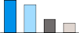
k=10 k=50 k=100 k=150 k=200
Return [%]
0.46
0.43
0.32
0.26
0.25
0.23
0.18
0.14
0.17
0.16
0.12
0.10
0.13
0.12
0.09
0.08
0.10
0.10
0.07
0.06
LSTM
RAF
DNN
LOG
LSTM
RAF
DNN
LOG
LSTM
RAF
DNN
LOG
LSTM
RAF
DNN
LOG
LSTM
RAF
DNN
LOG
Standard deviation [%]
2.09
2.15
1.00
0.93
1.39
1.38
0.74
0.67
1.04
1.02
0.59
0.53
0.84
0.82
0.49
0.44
0.70
0.67
LSTM
RAF
DNN
LOG
LSTM
RAF
DNN
LOG
LSTM
RAF
DNN
LOG
LSTM
RAF
DNN
LOG
LSTM
RAF
DNN
LOG
Sharpe ratio
5.83
5.00
2.43
1.70
4.98
4.76
2.22
1.66
4.25
4.24
1.82
1.42
3.68
3.82
1.62
1.31
3.30
3.58
1.46
1.19
LSTM
RAF
DNN
LOG
LSTM
RAF
DNN
LOG
LSTM
RAF
DNN
LOG
LSTM
RAF
DNN
LOG
LSTM
RAF
DNN
LOG
Accuracy [%]
54.3
53.8
53.7
51.3
51.7
51.0
51.7
51.7 51.4
50.9
51.4 51.4
51.1
50.9
LSTM
RAF
DNN
LOG
LSTM
RAF
DNN
LOG
LSTM
RAF
DNN
LOG
LSTM
RAF
DNN
LOG
LSTM
RAF
DNN
LOG
We focus our subsequent analyses on the long-short portfolio with k = 10.
Details on predictive accuracy
The key task of the employed machine learning methods is to accurately predict whether a stock outperforms its cross-sectional median or not. In this paragraph, we benchmark the predictive accuracy of the LSTM forecasts against those of the other methods, and against random guessing. Furthermore, we compare the financial performance of the LSTM with 100,000 randomly generated long-short portfolios.
First, we deploy the Diebold-Mariano (DM) test of Diebold and Mariano (1995) to evaluate the null that the forecasts of method i have inferior accuracy than the forecasts of method j, with i, j ∈ {LSTM, RAF, DNN, LOG} and i /= j. For each forecast of each method, we assign a 0 in case the stock of the k = 10 portfolio is correctly classified and a 1 otherwise, and use this vector of classification errors as input for the DM test. Results are depicted in Panel A of table 2. In line one, for the null that the LSTM forecast is inferior to the forecasts of RAF, DNN, or LOG, we obtain p-values of 0.0143, 0.0037, and 0.0000, respectively. If we test at a five percent significance
level, and apply a Bonferroni correction for three comparisons, the adjusted significance level is
1.67 percent, and we can still reject the individual null hypotheses that the LSTM forecasts are less accurate than the RAF, DNN, or LOG forecasts. Hence, it makes sense to assume that the LSTM forecasts are superior to those of the other considered methods. Similarly, we can reject the null that the RAF forecasts are inferior to the LOG forecasts as well as the null that the DNN forecasts are inferior to the LOG forecasts. In other words, the predictions of the sophisticated machine learning approaches all outperform those of a standard logistic regression classifier. Apparently, the former are able to capture complex dependencies in our financial time series data that cannot be extracted by a standard logistic regression. However, from the DM test matrix, we cannot infer that the RAF forecasts outperform the DNN forecasts or vice versa - both methods seem to exhibit similar predictive accuracy. Our key finding is though, that the LSTM network - despite its significantly higher computational cost - is the method of choice in terms of forecasting accuracy.
Second, we use the Pesaran-Timmermann (PT) test to evaluate the null hypotheses that pre- diction and response are independently distributed for each of the forecasting methods. We find p-values of zero up to the fourth digit, suggesting that the null can be rejected at any sensible level of significance. In other words, each machine learning method we employ exhibits statistically significant predictive accuracy.
A: DM test B: PT test
i
j =
LSTM
RAF
DNN
LOG
Method
Result
LSTM
-
0.0143
0.0037
0.0000
LSTM
0.0000
RAF
0.9857
-
0.3180
0.0000
RAF
0.0000
DNN
0.9963
0.6820
-
0.0000
DNN
0.0000
LOG
1.0000
1.0000
1.0000
-
LOG
0.0000
Table 2: Panel A: P-values of Diebold-Mariano (DM) test for the null hypothesis that the forecasts of method i have inferior accuracy than the forecasts of method j. Panel B: P-values of the Pesaran-Timmermann (PT) test for the null hypothesis that predictions and responses are independently distributed. Both panels are based on the k = 10 portfolio from December 1992 to October 2015.
Third, we provide a statistical estimate for the probability of the LSTM network having ran- domly achieved these results. For k = 10, we consider a total of 5, 750×10×2 = 115, 000 top and flop stocks, of which 54.3 percent are correctly classified. If the true accuracy of the LSTM network was indeed 50 percent, we could model the number of “successes”, i.e., the number of correctly classified stocks X in the top/flop with a binomial distribution, so X ∼ B(n = 115, 000, p = 0.5, q = 0.5).
For such a large n, X
appr.
∼ N (µ = np, σ =
√
npq). Now, we can easily compute the probability
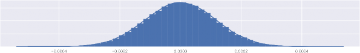

of achieving more than 54.3 percent accuracy, if the LSTM network had a true accuracy of 50 percent. We use the R package Rmpfr of Maechler (2016) to evaluate multiple-precision floating point numbers and compute a probability of 2.7742e-187 that a random classifier performs as well as the LSTM by chance alone.
Finally, we assess the financial performance of 100,000 randomly sampled portfolios in the sense of Malkiel’s monkey throwing darts at the Wall Street Journal’s stock page (Malkiel, 2007). Hereby, we randomly sample 10 stocks for the long and 10 stocks for the short portfolio without replacement for each of the 5,750 trading days. All these portfolios over the 5,750 days can be interpreted as those being picked by one monkey. Then, we compute the mean average daily return of the combined long-short portfolios over these 5,750 days to evaluate the monkey’s performance. The results of 100,000 replications, i.e., of 100,000 different monkeys, are illustrated in figure 4. As expected, we see an average daily return of zero prior to transaction costs. More importantly, even the best performing “monkey” with an average daily return of 0.05 percent, does not even come close to the results of the applied models shown in figure 3.
Details on financial performance
Table 3 provides insights of the financial performance of the LSTM, compared to the bench- marks, prior to and after transaction costs.
Return characteristics: In panel A of table 3, we see that the LSTM exhibits favorable return characteristics. Mean returns of 0.46 percent before and 0.26 percent after transaction costs are statistically significant, with a Newey-West t−statistic of 16.9336 before and 9.5792 after trans- action costs, compared to a critical value of 1.9600 (5 percent significance level). The median is only slightly smaller than the mean return, and quartiles as well as minimum and maximum values suggest that results are not caused by outliers. The share of positive returns is at 55.74 percent

Before transaction costs After transaction costs
LSTM
RAF
DNN
LOG
LSTM
RAF
DNN
LOG
MKT
A
Mean return (long)
0.0029
0.0030
0.0022
0.0021
0.0019
0.0020
0.0012
0.0011
-
Mean return (short)
0.0017
0.0012
0.0010
0.0005
0.0007
0.0002
0.0000
-0.0005
-
Mean return
0.0046
0.0043
0.0032
0.0026
0.0026
0.0023
0.0012
0.0006
0.0004
Standard error
0.0003
0.0003
0.0004
0.0004
0.0003
0.0003
0.0004
0.0004
0.0001
t-Statistic
16.9336
14.1136
8.9486
7.0006
9.5792
7.5217
3.3725
1.6666
2.8305
Minimum
-0.2176
-0.2058
-0.1842
-0.1730
-0.2196
-0.2078
-0.1862
-0.1750
-0.0895
Quartile 1
-0.0053
-0.0050
-0.0084
-0.0089
-0.0073
-0.0070
-0.0104
-0.0109
-0.0046
Median
0.0040
0.0032
0.0025
0.0022
0.0020
0.0012
0.0005
0.0002
0.0008
Quartile 3
0.0140
0.0124
0.0140
0.0133
0.0120
0.0104
0.0120
0.0113
0.0058
Maximum
0.1837
0.3822
0.4284
0.4803
0.1817
0.3802
0.4264
0.4783
0.1135
Share > 0
0.6148
0.6078
0.5616
0.5584
0.5574
0.5424
0.5146
0.5070
0.5426
Standard dev.
0.0209
0.0215
0.0262
0.0269
0.0209
0.0215
0.0262
0.0269
0.0117
Skewness
-0.1249
2.3052
1.2724
1.8336
-0.1249
2.3052
1.2724
1.8336
-0.1263
Kurtosis
11.6967
40.2716
20.6760
30.2379
11.6967
40.2716
20.6760
30.2379
7.9791
B
VaR 1%
-0.0525
-0.0475
-0.0676
-0.0746
-0.0545
-0.0495
-0.0696
-0.0766
-0.0320
CVaR 1%
-0.0801
-0.0735
-0.0957
-0.0995
-0.0821
-0.0755
-0.0977
-0.1015
-0.0461
VaR 5%
-0.0245
-0.0225
-0.0333
-0.0341
-0.0265
-0.0245
-0.0353
-0.0361
-0.0179
CVaR 5%
-0.0430
-0.0401
-0.0550
-0.0568
-0.0450
-0.0421
-0.0570
-0.0588
-0.0277
Max. drawdown
0.4660
0.3187
0.5594
0.5595
0.5233
0.7334
0.9162
0.9884
0.5467
C
Return p.a.
2.0127
1.7749
1.0610
0.7721
0.8229
0.6787
0.2460
0.0711
0.0925
Excess return p.a.
1.9360
1.7042
1.0085
0.7269
0.7764
0.6359
0.2142
0.0437
0.0646
Standard dev. p.a.
0.3323
0.3408
0.4152
0.4266
0.3323
0.3408
0.4152
0.4266
0.1852
Downside dev. p.a.
0.2008
0.1857
0.2524
0.2607
0.2137
0.1988
0.2667
0.2751
0.1307
Sharpe ratio p.a.
5.8261
5.0001
2.4288
1.7038
2.3365
1.8657
0.5159
0.1024
0.3486
Sortino ratio p.a.
10.0224
9.5594
4.2029
2.9614
3.8499
3.4135
0.9225
0.2583
0.7077
Table 3: Panel A, B, and C illustrate performance characteristics of the k = 10 portfolio, before and after transaction costs for LSTM, compared to RAF, DNN, LOG, and to the general market (MKT) from December 1992 to October 2015. MKT represents the general market as in Kenneth R. French’s data library, see here. Panel A depicts daily return characteristics. Panel B depicts daily risk characteristics. Panel C depicts annualized risk-return metrics. Newey-West standard errors with a one-lag correction are used.
after transaction costs, an astonishingly high value for a long-short portfolio. The second best model is the RAF, with mean returns of 0.23 percent after transaction costs, albeit at slightly higher standard deviation (0.0209 LSTM vs. 0.0215 RAF). The DNN places third with mean re- turns of 0.12 percent per day after transaction costs - still statistically significant - compared to the logistic regression. The simplest model achieves mean returns of 0.06 percent per day after transaction costs, which are no longer significantly different from zero (Newey-West t−statistic of
1.6666 compared to critical value of 1.9600).
Risk characteristics: In panel B of table 3, we observe a mixed picture with respect to risk characteristics. In terms of daily value at risk (VaR), the LSTM achieves second place after the RAF, with a 1-percent VaR of -5.45 percent compared to -4.95 percent for the RAF. The riskiest strategy stems from the logistic regression model, where a loss of -7.66 percent is exceeded in one percent of all cases - more than twice as risky as a buy-and-hold investment in the general market. However, the LSTM has the lowest maximum drawdown of 52.33 percent - compared to all other models and the general market.
Annualized risk-return metrics: In panel C of table 3, we analyze risk-return metrics on an annualized basis. We see that the LSTM achieves the highest annualized returns of 82.29 percent after transaction costs, compared to the RAF (67.87 percent), the DNN (24.60 percent), the LOG (7.11 percent) and the general market (9.25 percent). Annualized standard deviation is at the second lowest level of 33.23 percent, compared to all benchmarks. The Sharpe ratio scales excess return by standard deviation, and thus can be interpreted as a signal-to-noise ratio in finance, or the return per unit of risk. We see that the LSTM achieves the highest level of 2.34, with the RAF coming in second with 1.87, while all other methods have a Sharpe ratio well below 1.0.
From a financial perspective, we have two key findings. First, the LSTM outperforms the RAF by a clear margin in terms of return characteristics and risk-return metrics. We are thus able to show that choosing LSTM networks - which are inherently suitable for time series prediction tasks
- outperform shallow tree-based models as well as standard deep learning. Second, we demonstrate that a standard logistic regression is not able to capture the same level of information from the feature space - even though we perform in-sample cross-validation to find optimal regularization values.
A critical review of LSTM profitability over time
In figure 5, we display strategy performance over time, i.e., from January 1993 to October 2015.
We focus on the most competitive techniques, i.e., the LSTM and the random forest.
1993/01 to 2000/12: These early times are characterized by strong performance - with the LSTM being superior to the RAF with respect to average returns per day, Sharpe ratio, and
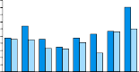
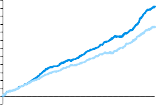
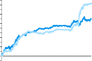
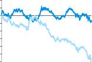
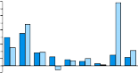
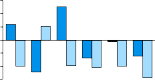
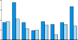
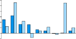
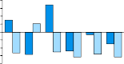
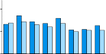
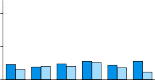
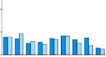
1993 - 2000 2001 - 2009 2010 - 2015
Development of cumulative profits [USD] Development of cumulative profits [USD] Development of cumulative profits [USD]
12
11
10
9
8
7
6
5
4
3
2
1
0
-1
1993
1994
1995
1996
1997
1998
1999
2000
6.0
5.5
5.0
4.5
4.0
3.5
3.0
2.5
2.0
1.5
1.0
0.5
0.0
-0.5
2001 2002 2003 2004 2005 2006 2007 2008 2009
0.4
0.2
0.0
-0.2
-0.4
-0.6
-0.8
-1.0
-1.2
2010
2011
2012
2013
2014
2015
1.0
0.9
0.8
0.7
0.6
0.5
0.4
0.3
0.2
0.1
0.0
Average daily returns by year [%]
0.9
0.8
0.7
0.6
0.5
0.4
0.3
0.2
0.1
0.0
-0.1
Average daily returns by year [%]
0.15
0.10
0.05
0.00
-0.05
-0.10
-0.15
Average daily returns by year [%]
1993
1994
1995
1996
1997
1998
1999
2000
2001 2002 2003 2004 2005 2006 2007 2008 2009
2010
2011
2012
2013
2014
2015
Annualized Sharpe ratio Annualized Sharpe ratio Annualized Sharpe ratio
20
15
10
5
0
1993
1994
1995
1996
1997
1998
1999
2000
6
5
4
3
2
1
0
-1
2001 2002 2003 2004 2005 2006 2007 2008 2009
2.0
1.5
1.0
0.5
0.0
-0.5
-1.0
-1.5
-2.0
2010
2011
2012
2013
2014
2015
Average accuracy [%] Average accuracy [%] Average accuracy [%]
0.60
0.55
0.60
0.55
0.60
0.55
0.50
1993
1994
1995
1996
1997
1998
1999
2000
0.50
2001 2002 2003 2004 2005 2006 2007 2008 2009
0.50
2010
2011 2012
2013
2014
2015
LSTM
RAF
Figure 5: Contrast of LSTM and RAF performance from January 1993 to October 2015 for the k = 10 portfolio, i.e., development of cumulative profits on 1 USD average investment per day, average daily returns by year, annualized Sharpe ratio, and average accuracy per year, after transaction costs.
accuracy in almost all years. Cumulative payouts on 1 USD average invest per day reach a level of over 11 USD for the LSTM and over 8 USD for the RAF until 2000. When considering this outperformance, it is important to note that LSTM networks have been introduced in 1997, and can only be feasibly deployed ever since the emergence of GPU computing in the late 2000s. As such, the exceptionally high returns in the 90s may well be driven by the fact that LSTMs were either unknown to or completely unfeasible for the majority of market professionals at that time.
A similar argument holds true for random forests.
2001/01 to 2009/12: The second period corresponds to a time of moderation. The LSTM is still able to produce positive returns after transaction costs in all years, albeit at much lower levels compared to the 90s. When considering cumulative payouts, we see that the outperformance of the LSTM compared to the random forest persists up to the financial crisis. A key advantage of these tree-based methods is their robustness to noise and outliers - which plays out during such volatile times. The RAF achieves exceptionally high returns and consistent accuracy values at a Sharpe ratio of up to 6. As such, total payouts on 1 USD investment amount to 4 USD for the LSTM, and to 5.6 USD for the RAF - with the majority of the RAF payouts being achieved during the financial crisis.
It seems reasonable to believe that this period of moderation is caused by an increasing diffusion of such strategies among industry professionals, thus gradually eroding profitability. However for the RAF, the global financial crisis in 2008/2009 constitutes an exception - with a strong resurgence in profitability. Following the literature, these profits may be driven by two factors. First, it is reasonable to believe that investors are “losing sight of the trees for the forest” (Jacobs and Weber, 2015, p. 75) at times of financial turmoil - thus creating realtive-value arbitrage opportunities, see Clegg and Krauss (2016). Second, at times of high volatility, limits to arbitrage are exceptionally high as well, making it hard to capture such relative-value arbitrage opportunities. Specifically short selling costs may rise for hard to borrow stocks - see Gregoriou (2012); Engelberg et al. (2016), or, in even more severe cases, short-selling may be banned altogether. But also the long side is affected, e.g., when widening spreads and decreasing liquidity set a cap on returns.
2010/01 to 2015/10: The third period corresponds to a time of deterioration. The random forest loses its edge, and destroys more than 1 USD in value, based on an average investment of 1 USD per day. By contrast, the LSTM continues realizing higher accuracy scores in almost all years and is able to keep capital approximately constant, after transaction costs.
It is difficult to assess in an academic backtest which fraction of returns is due to true market inefficiencies and which fraction is caused by limits to arbitrage. Irrespective of that, it is a well- established fact that financial time series data is exceptionally noisy and as such, capital market anomalies are very hard to detect. In this respect, we have successfully demonstrated how effectively LSTM networks extract meaningful information from such noisy time series data.
0.30
0.25
0.20
0.15
0.10
0.05
0.00
-0.05
-0.10
-0.15
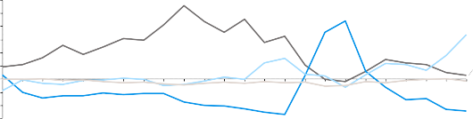
Oil & Gas
Technology
1993 1994 1995 1996 1997 1998 1999 2000 2001 2002 2003 2004 2005 2006 2007 2008 2009 2010 2011 2012 2013 2014 2015 Other
Financials
Figure 6: Time-varying share of industries in the k = 10 portfolio minus share of these industries in the S&P 500, calculated over number of stocks. A positive value indicates that the industry is overweighted and vice versa.
Coming from the LSTM’s ability to identify structure, we next analyze potential preferences for certain industries in the k = 10 portfolio. Specifically, we consider the difference between the share of an industry in the k = 10 portfolio and the share of that industry in the S&P 500 at that time. A positive value indicates that the industry is overweighted by the LSTM network, and a negative value indicates that it is underweighted.
Figure 6 depicts our findings for the most interesting industries - oil & gas, technology, financials, and all others. First, we see that there is a significant overweight of technology stocks building up end of the 90s - corresponding to the growing dot-com bubble and its bust. Second, we observe a rise in financial stocks around the years 2008/2009 - corresponding to the global financial crisis. And third, oil & gas stocks gain in weight as of 2014 - falling together with the recent oil glut and the significant drop in crude oil prices. It is interesting to see that the overweight in each industry adequately captures major market developments. We hypothesize that this behavior is driven by increasing volatility levels, and further elaborate on that point in the following subsection.
Sources of profitability - Common patterns in the top and flop stocks
Machine learning approaches - most notably artificial neural networks - are commonly considered as black-box methods. In this subsection, we aim for shining light into that black-box, thus unveiling common patterns in the top and flop stocks.
First, we conduct a very simple yet effective analysis. For every day, we extract all 240-day return sequences for the top and flop k stocks.8 Then, we stack all 5, 750 × 10 top and the same number of flop sequences on top of each other. For better representation, we accumulate the 240

8A return sequence is generated as described in subsection 3.2.
0.15
Top 10 Flop 10 Mean (cross-section across all stocks)
0.10
0.05
0.00
t-240 t-230 t-220 t-210 t-200 t-190 t-180 t-170 t-160 t-150 t-140 t-130 t-120 t-110 t-100 t-90 t-80 t-70 t-60 t-50 t-40 t-30 t-20 t-10 t
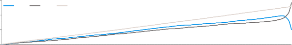
returns of each sequence to a return index, starting at a level of 0 on day t − 240 and then average these return index sequences. We hence obtain two generalized sequences, containing the patterns of the top 10 and of the flop 10 stocks. Results are depicted in figure 7, contrasted to the behavior of the cross-section across all stocks (mean). We see that the top and the flop stocks both exhibit below-mean momentum in the sense of Jegadeesh and Titman (1993), i.e., they perform poorly from day t − 240 until day t − 10, compared to the cross-section. From day t − 9 until t (note: the prediction is made on day t), the top stocks start crashing at accelerating pace, losing about 50 percent of what they have gained during the previous 230 days on average. By contrast, the flop stocks show an inverse pattern during the past 10 days prior to trading, and exhibit increasingly higher returns. It is compelling to see that the LSTM extracted such a strong commonality among the flop stocks and the top stocks.
Second, based on this visual insight, we construct further time-series characteristics for the top and flop stocks. Thereby, we follow the same methodology as above for generating the descriptive statistics, i.e., we compute the 240-day return sequence for each stock, calculate the desired statistic, and average over all k stocks, with k ∈ {1, 5, 10, 100, 200}. Specifically, we consider the following statistics:


(Multi-)period returns, as defined in section 3.2, with m ∈ {1, 5, 20, 240}, denoted as Re- turn t t-m in the graphic, where m is counting backwards from day t, the last element of the sequence (i.e., the day on which the prediction for t + 1 is made). Moreover, we consider the cumulative return from day t − 20 of the sequence until day t − 240 of the sequence, denoted as Return t-20 t-240.
Sample standard deviations, computed over the same time frames as above, and following the same naming conventions.
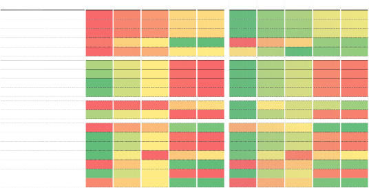
Mean
0.0005
0.0026
0.0101
0.1169
0.1279
0.0188
0.0202
0.0212
0.0213
0.1225
4.7994
0.0002
1.0465
0.0408
0.1659
-0.1092
0.0249
0.3310
Top k stocks Flop k stocks
Characteristic k=1 k=5 k=10 k=100 k=200 k=1 k=5 k=10 k=100 k=200
Return_t_t-1
-0.0251
-0.0190
-0.0154
-0.0032
-0.0023
0.0278
0.0186
0.0147
0.0040
0.0033
Return_t_t-5
-0.0635
-0.0492
-0.0405
-0.0077
-0.0054
0.0774
0.0544
0.0454
0.0132
0.0108
Return_t_t-20
-0.0612
-0.0479
-0.0383
-0.0024
0.0002
0.0825
0.0635
0.0562
0.0233
0.0203
Return_t-20_t-240
0.0279
0.0762
0.0906
0.1190
0.1200
0.0180
0.0589
0.0778
0.1100
0.1117
Return_t_t-240
-0.0349
0.0249
0.0488
0.1157
0.1196
0.1070
0.1303
0.1412
0.1358
0.1342
Rolling_std_5_days
0.0439
0.0361
0.0323
0.0193
0.0183
0.0557
0.0444
0.0392
0.0222
0.0207
Rolling_std_20_days
0.0428
0.0357
0.0324
0.0207
0.0198
0.0478
0.0399
0.0364
0.0231
0.0219
Rolling_std_t-20_t-240
0.0355
0.0318
0.0298
0.0216
0.0210
0.0356
0.0328
0.0312
0.0233
0.0224
Rolling_std_240_days
0.0367
0.0325
0.0303
0.0217
0.0210
0.0375
0.0339
0.0321
0.0234
0.0225
Rolling_skew_240_days
0.0802
0.0827
0.0832
0.1077
0.1145
0.1277
0.1184
0.1206
0.1213
0.1241
Rolling_kurt_240_days
7.6259
6.2575
5.8142
4.7167
4.7056
9.3538
7.3190
6.6067
4.9777
4.9145
FF_Alpha
-0.0007
-0.0004
-0.0002
0.0001
0.0002
-0.0003
-0.0001
0.0000
0.0002
0.0002
FF_Mkt-RF
1.2635
1.2184
1.1937
1.0525
1.0378
1.2593
1.2316
1.2169
1.0960
1.0768
FF_SMB
0.3461
0.2758
0.2357
0.0499
0.0347
0.3423
0.2944
0.2630
0.0892
0.0689
FF_HML
0.2550
0.1700
0.1440
0.1594
0.1638
0.2444
0.1754
0.1480
0.1609
0.1650
FF_Mom
-0.4157
-0.2900
-0.2410
-0.1080
-0.1007
-0.4224
-0.3354
-0.2920
-0.1432
-0.1307
FF_ST_Rev
0.1270
0.0940
0.0784
0.0263
0.0227
0.1308
0.1006
0.0840
0.0372
0.0324
FF_R_squared
0.2700
0.2925
0.3031
0.3299
0.3311
0.2584
0.2829
0.2958
0.3268
0.3286
Figure 8: Time-series characteristics of top and flop k stocks for LSTM strategy. Statistics are first computed over the 240-day return sequences for each stock in the top or flop k, as described in the bullet list in subsection 4.2 (including naming conventions) and then averaged over all top k or all flop k stocks. The mean is calculated similarly, however across all stocks.
Sample skewness and kurtosis over the full 240 days of each sequence.


The coefficients of a Carhart regression in the sense of Gatev et al. (2006); Carhart (1997). Thus, we extract the alpha of each stock (FF Alpha - denoting the idiosyncratic return of the stock beyond market movements), the beta (FF Mkt-RF - denoting how much the stock moves when the market moves by 1 percent), the small minus big factor (FF SMB - denoting the loading on small versus large cap stocks), the high minus low factor (FF HML - denoting the loading on value versus growth stocks), the momentum factor (FF Mom - denoting the loading on the momentum factor in the sense of Jegadeesh and Titman (1993); Carhart (1997)), the short-term reversal factor (FF ST Rev - denoting the loading on short-term reversal effects) and the R squared (FF R squared - denoting the percentage of return variance explained by the factor model).
Results are shown in figure 8. The graphical patterns from the last paragraph now become apparent in a quantitative manner - across different values of k. First, the top stocks exhibit highly negative returns in the last days prior to the prediction, and the flop stocks highly positive returns. This behavior corresponds to short-term reversal strategies, as outlined in Jegadeesh
(1990); Lehmann (1990); Lo and MacKinlay (1990) - to name a few. The LSTM network seems to independently find the stock market anomaly, that stocks that sharply fall in the last days then tend to rise in the next period and vice versa. The effect is stronger, the smaller k, i.e., the lower the number of stocks considered in the portfolio. Second, both top and flop stocks exhibit weak momentum in the sense of Jegadeesh and Titman (1993). For example, the top 10 stocks show an average momentum of 9.1 percent from day t − 240 until day t − 20 of the sequence, compared to 11.7 percent, i.e., the mean across all stocks. The flop stocks exhibit a similar pattern. The smaller k, the stronger the underperformance with respect to the momentum effect. Third, when considering standard deviation, clearly, high volatility stocks are preferred compared to the market, and volatility is increasing for the more extreme parts of the ranking. Volatility in the sense of beta can be an important return predictive signal - see Baker et al. (2011); Frazzini and Pedersen (2014); Hong and Sraer (2016), and a higher beta is a key characteristic of the selected stocks. Also, skewness is similar to the general market, and the returns of the top and flop stocks are more leptokurtic than the general market - a potential return predictive signal remotely relating to the works of Kumar (2009); Boyer et al. (2010); Bali et al. (2011) on stocks with “lottery-type” features. Finally, we see that the above mentioned time-series characteristics are also confirmed in the regression coefficients. Top and flop k stocks exhibit higher beta, a negative loading on the momentum factor and a positive loading on the short-term reversal factor - with the respective magnitude increasing with lower values for k. We observe a slight loading on the SMB factor, meaning that smaller stocks among the S&P 500 constituents are selected - which usually have higher volatility.
Given that the LSTM network independently extracted these patterns from 240-day sequences of standardized returns, it is astonishing to see how well some of them relate to commonly known capital market anomalies. This finding is complelling, given that none of the identified charac- teristics is explicitly coded as feature, but instead derived by the LSTM network all by itself - another key difference to the memory-free models, such as the random forest, who are provided with mutli-period returns as features.
In this subsection, we build on the previous analysis and construct a simplified trading strategy. From figure 7 and figure 8, we see that the most dominant characteristic is the slump or steep rise in returns in the last days prior to trading. On a similar note, Krauss et al. (2017) find that the last
Long | Short | |
(Intercept) | 0.0019∗∗∗ | 0.0012∗∗∗ |
(0.0002) | (0.0002) | |
STR Long | 0.5502∗∗∗ | |
(0.0070) | ||
STR Short | 0.8184∗∗∗ | |
(0.0101) | ||
R2 | 0.5211 | 0.5356 |
Adj. R2 | 0.5210 | 0.5355 |
Num. obs. | 5750 | 5750 |
RMSE | 0.0159 | 0.0157 |
∗∗∗p < 0.001, ∗∗p < 0.01, ∗p < 0.05
Table 4: Regression of the long, and short returns of the LSTM k = 10 portfolio on the long (STR Long) and short (STR Short) returns of the simplified short-term reversal strategy, prior to transaction costs. Standard errors are depicted in parenthesis
returns are the most important variables for their machine learning models, and so do Moritz and Zimmermann (2014). For the sake of simplicity, we build on this most salient point, and loosely follow Jegadeesh (1990); Lehmann (1990), two of the creators of the short-term reversal anomaly. Specifically, we go long the top k stocks with the most negative 5-day cumulative return prior to the trading day, and short the flop k stocks with the most positive 5-day cumulative return prior to the trading day - all equal-weight. For this very simple yet transparent strategy, we find average daily returns of 0.23 bps, prior to transaction costs, or 3 bps after transaction costs. Clearly, this is far from the 0.46 bps of the LSTM, yet it is interesting to see which part of the LSTM returns can be explained by this simplified algorithm. We hence regress the long return time series and the short return time series of the LSTM k = 10 portfolio on the corresponding portfolios of our short-term reversal strategy. Results are depicted in table 4. Interestingly enough, we see that 52.1 percent of variance of LSTM long returns and 53.6 of the variance of the LSTM short returns can be explained by the simplified strategy. The intercept corresponds to the alpha, i.e., the unexplained part of returns still hidden in the black-box of the LSTM network, beyond the simple short-term reversal strategy. On the long leg, an alpha of 19 bps remains (before: 29 bps, see table 3), and on the short leg, an alpha of 12 bps (before: 17 bps, see table 3). As such, total remaining alpha per day prior to transaction costs is 31 bps, or 11 bps after transaction costs - which is still an impressive value and a clear challenge to the semi-strong form of market efficiency.